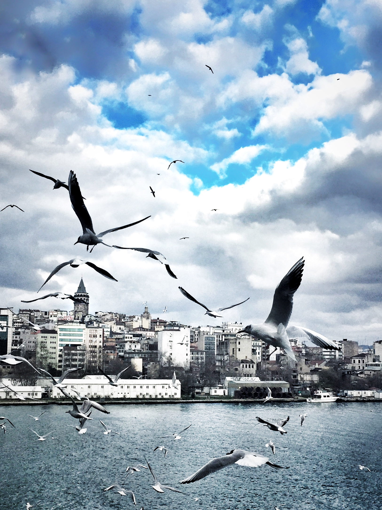

الصرد… طائر يُعدم فرائسه على الأشواك
طائر صغير يحوّل الأشواك إلى أدوات لتثبيت الفرائس ومخازن للطعام. كيف يفعل الصرد ذلك، وأين نراه في البلاد العربية؟
طائر صغير يحوّل الأشواك إلى أدوات لتثبيت الفرائس ومخازن للطعام. كيف يفعل الصرد ذلك، وأين نراه في البلاد العربية؟

أصوات خافتة من داخل البيضة تكشف بداية عالم صوتي غني لدى نسر روبل… وقد تفتح بابًا جديدًا لحمايته.

خمسة ذكور من حوّام العسل الأوروبي تنطلق من مواقع متقاربة في بولندا، ثم تسلك أربعة ممرات للهجرة إلى أفريقيا.

دراسة في Nature Cities تستند إلى نحو 17 مليون سجل في 452 مدينة بأميركا الشمالية، وتكشف اختلاف علاقة المدن بتنوّع الطيور بحسب الموسم والمناخ.

بيانات من شمال ويسكونسن تربط اختيار مناطق التكاثر بدرجة العمران على ضفاف بحيرة النشأة، وتكشف استجابة مختلفة قرب فقس البيض.

دراسة محكّمة في Nature تصف طائرًا عاش قبل نحو 150 مليون سنة بأجنحة قصيرة وتكيفات أرضية غير متوقعة.

دراسة محكّمة تتبع طيورًا عبر البحر الأحمر والصحراء، وتبرز أهمية الأراضي الزراعية على ضفاف النيل كمحطات توقف.